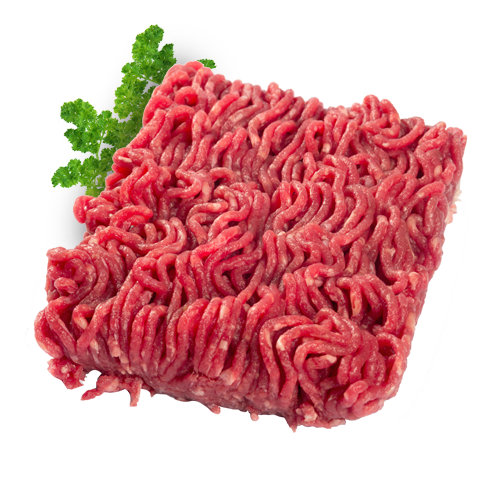
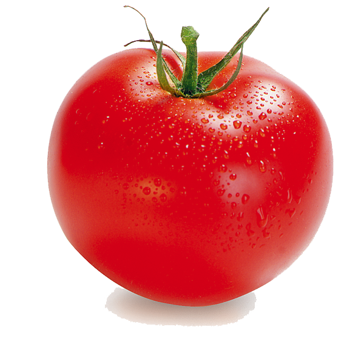
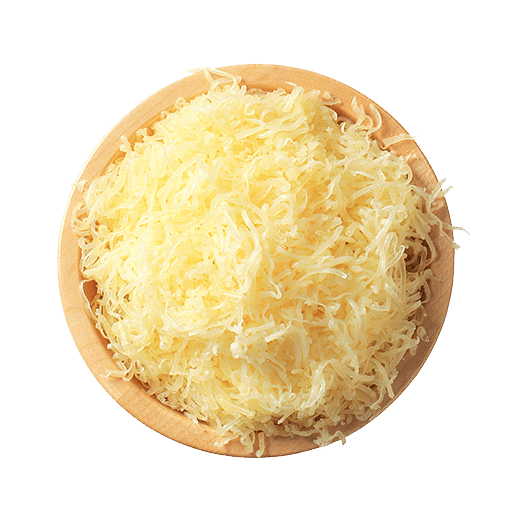
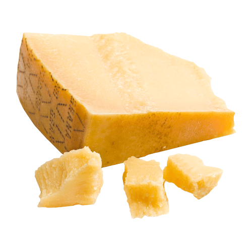
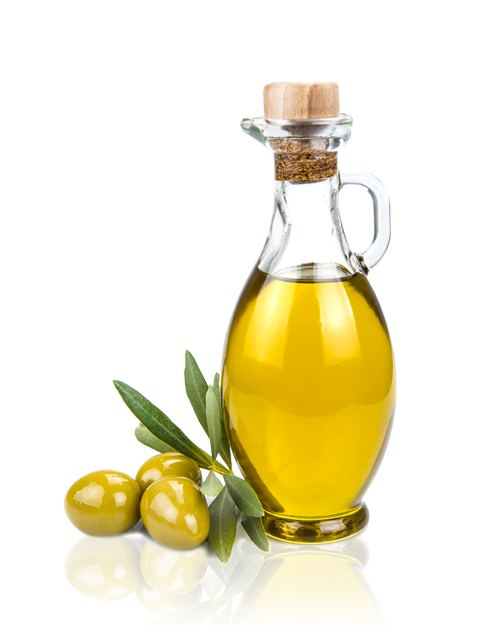
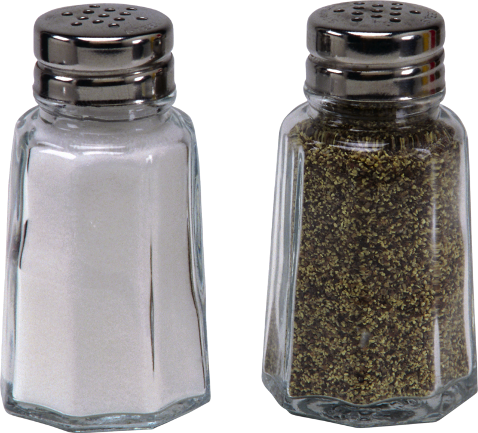
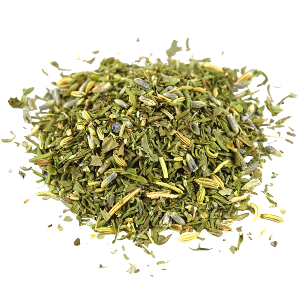

Featured Ingredients :
 12 Lasagna sheets
12 Lasagna sheets

300g of Ground Beef
800g of Tomato Pulp 1 Onion
1 Onion
 1 Clove of garlic
1 Clove of garlic

100g of Emmental Cheese
50g of Parmesan Cheese
4tbsp of Olive oil
Salt & Pepper
Herbs of ProvenceHow to Make Lasagna :
→ Follow these simple steps to create a delicious lasagna:
- Preheat the oven to 180°C.
- Cook the lasagna sheets according to the package instructions.
- Heat the olive oil in a large pan and add the ground beef.
- Cook until browned, then add the onion and garlic.
- Add the tomato pulp and herbs, and simmer for 10 minutes.
- Layer the pasta sheets with the meat sauce and cheese.
- Bake for 30 minutes or until golden brown.